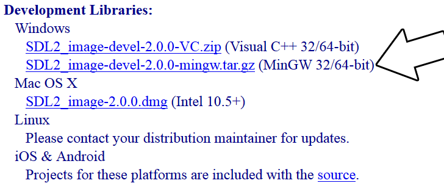

Setting up SDL Extension Libraries on MinGW
Last Updated 6/21/14
1)First thing you need to do is download SDL_image headers and binaries. You will find them on the SDL_image website,
specifically on this page.
You'll want to download the MinGW development libraries.
Open the gzip archive and there should be a tar archive. Open up the tar archive and the should be a folder called SDL2_image-2.something.something. In side of that folder there should be a bunch of folders and files, most importantly i686-w64-mingw32 which contains the 32bit library and x86_64-w64-mingw32 which contains the 64bit library.
2)This is important: most compilers still compile 32bit binaries by default to maximize compatibility. We will be using the 32bit binaries for this tutorial set. It doesn't matter if you have a 64bit operating system, since we are compiling 32bit binaries we will be using the 32bit library.
Inside of i686-w64-mingw32 are the include, lib, and bin folders which contain everything we need compile and run SDL applications. Copy the contents of i686-w64-mingw32 to any directory you want. I recommend putting it in a folder that you dedicate to holding all your development libraries for MinGW. For these tutorials I'm putting it in a directory I created C:\mingw_dev_lib
3)Now go download the source for lesson 06. Extract the source somewhere and compile by entering this big old command (This command assumed you have SDL_image extracted at C:\mingw_dev_lib):
You'll want to download the MinGW development libraries.

Open the gzip archive and there should be a tar archive. Open up the tar archive and the should be a folder called SDL2_image-2.something.something. In side of that folder there should be a bunch of folders and files, most importantly i686-w64-mingw32 which contains the 32bit library and x86_64-w64-mingw32 which contains the 64bit library.
2)This is important: most compilers still compile 32bit binaries by default to maximize compatibility. We will be using the 32bit binaries for this tutorial set. It doesn't matter if you have a 64bit operating system, since we are compiling 32bit binaries we will be using the 32bit library.
Inside of i686-w64-mingw32 are the include, lib, and bin folders which contain everything we need compile and run SDL applications. Copy the contents of i686-w64-mingw32 to any directory you want. I recommend putting it in a folder that you dedicate to holding all your development libraries for MinGW. For these tutorials I'm putting it in a directory I created C:\mingw_dev_lib
3)Now go download the source for lesson 06. Extract the source somewhere and compile by entering this big old command (This command assumed you have SDL_image extracted at C:\mingw_dev_lib):
g++ 06_extension_libraries_and_loading_other_image_formats.cpp -IC:\mingw_dev_lib\include\SDL2 -LC:\mingw_dev_lib\lib -w -Wl,-subsystem,windows -lmingw32 -lSDL2main -lSDL2 -lSDL2_image -o 06_extension_libraries_and_loading_other_image_formats
If you're using a makefile, you can just change the values of some of the macros:From Makefile
#OBJS specifies which files to compile as part of the project
OBJS = 06_extension_libraries_and_loading_other_image_formats.cpp
#CC specifies which compiler we're using
CC = g++
#INCLUDE_PATHS specifies the additional include paths we'll need
INCLUDE_PATHS = -IC:\mingw_dev_lib\include\SDL2
#LIBRARY_PATHS specifies the additional library paths we'll need
LIBRARY_PATHS = -LC:\mingw_dev_lib\lib
#COMPILER_FLAGS specifies the additional compilation options we're using
# -w suppresses all warnings
# -Wl,-subsystem,windows gets rid of the console window
COMPILER_FLAGS = -w -Wl,-subsystem,windows
#LINKER_FLAGS specifies the libraries we're linking against
LINKER_FLAGS = -lmingw32 -lSDL2main -lSDL2 -lSDL2_image
#OBJ_NAME specifies the name of our exectuable
OBJ_NAME = 06_extension_libraries_and_loading_other_image_formats
#This is the target that compiles our executable
all : $(OBJS)
$(CC) $(OBJS) $(INCLUDE_PATHS) $(LIBRARY_PATHS) $(COMPILER_FLAGS) $(LINKER_FLAGS) -o $(OBJ_NAME)
As you can see it was as easy as changing the file name of the source and executable and adding